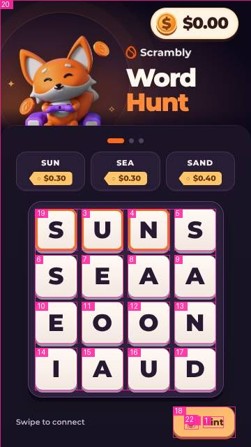

What the models see
The screenshot is the main observation. Everything added to it is generic and discovered at run time: numbered DOM elements when a game has them, and for reflex play a crop that follows the tracked player. No game variable is ever read.
Set-of-marks on a DOM game

Word Hunt. Interactive elements get numbered tags, so the planner answers “drag through 2, 3, 4” and the path goes through the exact tile centres. Canvas and WebGL games return few or no tags and are played from pixels.
The reflex policy, as drawn
Neon Lanes at 20.0 s. The planner marks the object it controls and the area where a hazard needs a reaction now. The dashed band is the extra depth the session had learned by its end, after two crashes that were seen too late (44, then 95 of 1000).
The crop that follows the player
The frame that fired “dodge right” at 20.97 s, after a 163 ms reflex delay. Left and right in the crop are left and right of the car, so the question needs no lane arithmetic.
 The tracked template, cut where the planner pointed and matched frame to frame by normalized cross-correlation (numpy, a few ms).
The tracked template, cut where the planner pointed and matched frame to frame by normalized cross-correlation (numpy, a few ms).A hit, confirmed

The screen froze at 13.07 s. One question on the whole screen confirmed a crash (p = 0.99); three flashes in the same session were rejected (p = 0.03–0.35). The last reflex had fired 0.13 s earlier: seen too late, so the zone got deeper.